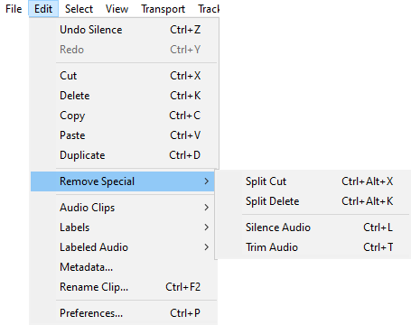
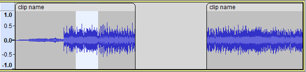
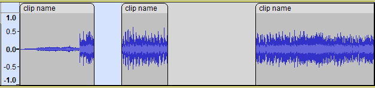
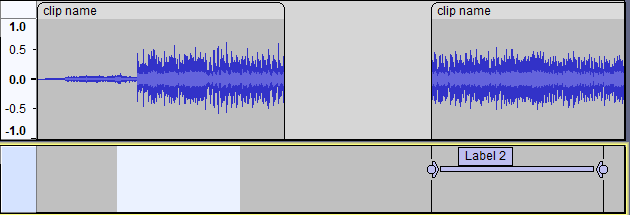
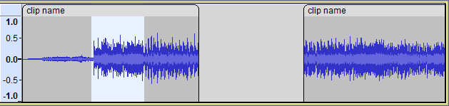
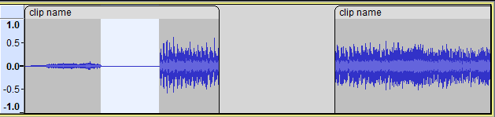
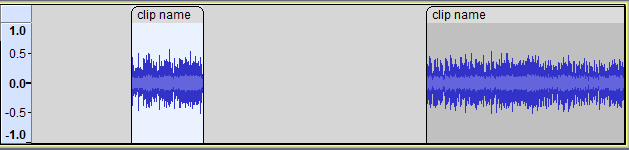

Edit Menu: Remove Special
You can also silence or trim audio only, not affecting labels.
Note that when you split (or trim) a clip each of the new sub-clips contains all of the audio that the parent clip had but with hidden audio data that you can expand out if required.
For more details on the use and management of clips please see Audacity Tracks and Clips- 
| You may hear a click at the edit points when you remove audio. This can be caused by DC offset in the waveform or by poor selection of the edit points. See this Editing Frequently Asked Question for how to deal with this. |
Split Cut Ctrl + Alt + X
Same as , but none of the audio data or labels to right of the selection are shifted. A gap is thus left behind in the audio track which splits the existing audio clip into two clips that can be moved independently using the Clip-handle drag-bars.
- Split Cut with audio selected:
- 
- After the Split Cut:
- 
| Note that this operation is non-destructive. The resulting clips can be expanded to recover the audio that was cut. See Audio Tracks and Clips. |
This is also a useful command to remove one label of a group of labels without affecting the other labels (be sure to select only in the label track unless you want to cut the audio as well as the label). The labels following the deleted section do not move to the left. The labels still correspond to the same audio regions. This is a quick way to delete a label without affecting any other labels on the Label Track.
- Split Cut with label selected:

- After the Split Cut:
- 
Split Delete Ctrl + Alt + K
Same as but the audio and/or labels are not put on the clipboard.
Silence Audio Ctrl + L
Replaces the selected audio with silence.
- 
- After the Silence Audio:
- 
| Note that this operation is destructive. The audio is permanently removed from the project. |
 Trim Audio Ctrl + T
Trim Audio Ctrl + T
Removes all audio from the current clip except the selected part, creating its own clip from the remaining audio. If there are other separate clips in the same track these are not removed or shifted.
- After the Trim Audio:
- 
- Result: the audio in the clip to the right is unaffected.
| Note that this operation is non-destructive. The resulting clips can be expanded to recover the audio that was cut. See Audio Tracks and Clips. |
If a selection is made in a clip that touches or overlaps the left (or right) boundary of the clip then erroneously all clips to the left (or right) in the track are removed by the Trim Audio command.
|